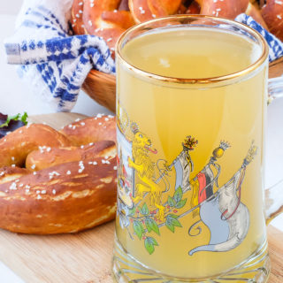
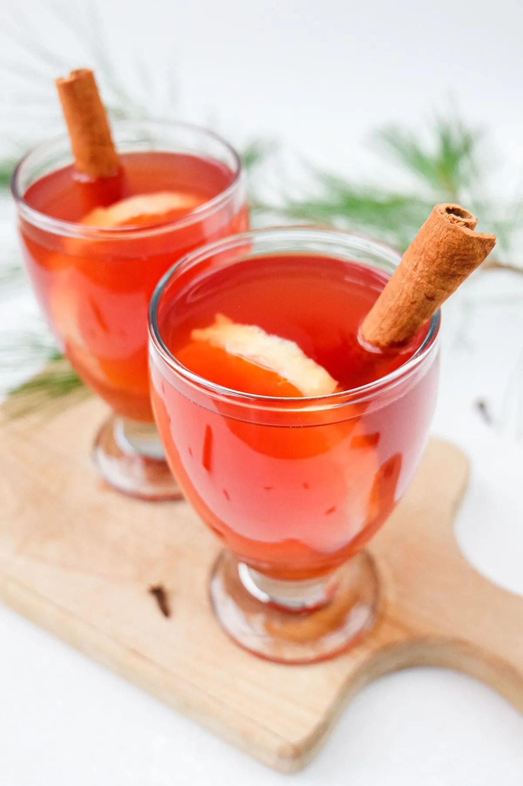

Bebidas
Gluhwein

Ingredientes:
750 ml de vinho tinto seco; 1 laranja; 1 limão; 10 cravos-da-índia; 3 paus de canela; 60g de açúcar; 2 estrelas de anis.
Modo de Preparo:
Corte a laranja e o limão em rodelas.
Em uma panela grande, misture todos os ingredientes.
Aqueça lentamente a mistura sem deixá-la ferver.
Deixe em fogo baixo por 20 a 25 minutos.
Coe e sirva quente em canecas.
Radler

Ingredientes:
1 xícara de refrigerante de limão/lima 1 xícara de cerveja lager clara
Modo de Preparo:
Adicione o refrigerante de limão a um copo grande de cerveja.
Em seguida, despeje a cerveja lager, inclinando o copo para evitar a formação excessiva de espuma.
Kinderpunsch

Ingredientes:
3 xícaras de água 3 saquinhos de chá de frutas vermelhas 1 xícara de suco de maçã 2 paus de canela 5 cravos 1 limão , orgânico 1 laranja orgânica 1 colher de sopa de açúcar granulado , ou mais a gosto.
Modo de Preparo:
Ferva a água em uma panela média no fogão ou em uma chaleira. Se usar uma chaleira, despeje a água quente na panela assim que estiver quente. Adicione os saquinhos de chá à água quente e deixe em infusão pelo tempo recomendado (geralmente de 5 a 8 minutos). 3 xícaras de água,3 saquinhos de chá de frutas vermelhas
Enquanto o chá está em infusão, lave a laranja e o limão orgânicos e corte-os em rodelas. Caso não encontre limões ou laranjas orgânicos, você também pode descascá-los. 1 limão,1 laranja
Quando o chá estiver pronto, retire os saquinhos de chá. Adicione o suco de maçã, os paus de canela, os cravos-da-índia, as fatias de limão, as fatias de laranja e o açúcar à panela e mexa bem. 1 xícara de suco de maçã,2 paus de canela,1 colher de sopa de açúcar granulado,5 cravos
Cubra a panela com uma tampa e cozinhe em fogo baixo por cerca de 15 minutos. Não deixe a mistura ferver, apenas mantenha-a aquecida para que os sabores se misturem.
Prove o Kinderpunsch e adicione mais açúcar, se necessário. Coe a bebida para remover os cravos e as fatias de fruta. Sirva quente e decore com fatias de laranja ou limão e/ou paus de canela, se desejar.